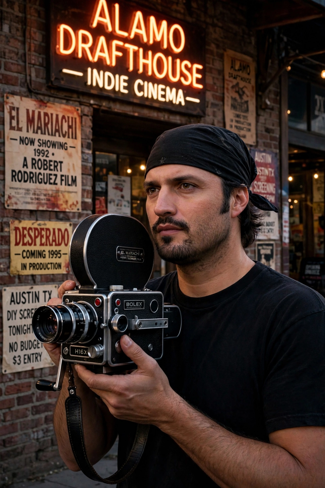

| Born | Robert Anthony Rodriguez, June 20, 1968, San Antonio, Texas, U.S. |
|---|---|
| Occupation | Film director, producer, screenwriter, editor, composer |
| Years active | 1991–present |
| Spouse | Elizabeth Avellán (m. 1990; div. 2006) |
Robert Anthony Rodriguez (born June 20, 1968) is an American filmmaker, composer, and visual effects supervisor. He shoots, edits, produces, and scores many of his films in Mexico and in his home state of Texas.
Rodriguez rose to fame with El Mariachi (1992), made for about $7,000, followed by Desperado (1995), From Dusk till Dawn (1996), the Spy Kids franchise, Sin City (2005), Machete (2010), and Alita: Battle Angel (2019). He is a frequent collaborator of Quentin Tarantino and Antonio Banderas.
Rodriguez was born in San Antonio, Texas, to Mexican-American parents. He developed an interest in film at age 11 after his father bought a VCR with a camera. He attended the University of Texas at Austin, where he created short films.
El Mariachi won the Audience Award at Sundance and led to a Columbia Pictures deal. Rodriguez founded Troublemaker Studios in Austin. His work is known for fast, low-budget production, digital cinematography, and doing many crew jobs himself — a style chronicled in his book Rebel Without a Crew.
Selected films: El Mariachi, Desperado, The Faculty (1998), Spy Kids (2001), Once Upon a Time in Mexico (2003), Sin City, Planet Terror (2007), Machete, Alita: Battle Angel, We Can Be Heroes (2020), Hypnotic (2023). He also directed episodes of The Mandalorian and The Book of Boba Fett.
Rodriguez has five children with Elizabeth Avellán, several of whom have worked on his films. He runs the El Rey Network legacy projects and continues to work in Austin.